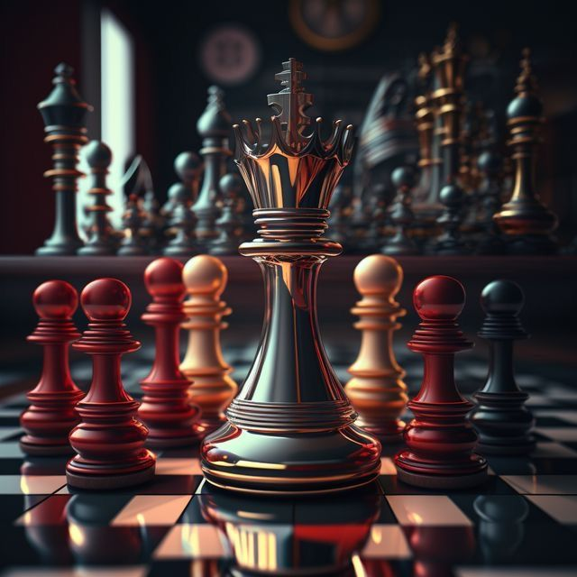

Biography
Sven Magnus Øen Carlsen[a] (born 30 November 1990) is a Norwegian chess grandmaster. He is a five-time World Chess Champion, the reigning four-time World Rapid Chess Champion, the reigning six-time World Blitz Chess Champion, and the reigning Chess World Cup Champion. He has held the No. 1 position in the FIDE world chess rankings since 1 July 2011 and trails only Garry Kasparov in time spent as the highest-rated player in the world. His peak rating of 2882 is the highest in history. He also holds the record for the longest unbeaten streak at the elite level in classical chess.[1][2] A chess prodigy, Carlsen finished first in the C group of the Corus chess tournament shortly after he turned 13 and earned the title of grandmaster a few months later. At 15, he won the Norwegian Chess Championship, and at 17 he finished joint first in the top group of Corus. He surpassed a rating of 2800 at 18, the youngest at the time to do so. In 2010, at 19, he reached No. 1 in the FIDE world rankings, the youngest person ever to do so. Carlsen became World Chess Champion in 2013 by defeating Viswanathan Anand. He retained his title against Anand the following year and won both the 2014 World Rapid Championship and World Blitz Championship, becoming the first player to hold all three titles simultaneously, a feat which he repeated in 2019 and 2022.[3][4] He defended his classical world title against Sergey Karjakin in 2016, Fabiano Caruana in 2018, and Ian Nepomniachtchi in 2021. He declined to defend his title against Nepomniachtchi in 2023, citing a lack of motivation.[5] Known for his attacking style as a teenager, Carlsen has since developed into a universal player. He uses a variety of openings to make it harder for opponents to prepare against him and reduce the utility of pre-game computer analysis.


Education
Carlsen began playing chess at the age of five and by 2004, he was ranked 2nd in Norway. It was in the same year that he first represented his country in an official tournament, the European Youth Chess Championship. Despite being the youngest player in the tournament, Carlsen managed to clinch the silver medal. In 2005, he became the youngest chess player to be awarded the title of International Master by the World Chess Federation. This title allows a player to represent their country in official international matches.Magnus Carlsen, after finishing primary school, took a year off to participate in international chess tournaments. Carlsen lost interest in high school and dropped out of high school in his senior year to play chess
Tournaments
Throughout his career, Carlsen has won numerous tournaments. Some of his notable victories include:
- The Linares chess tournament in 2009 and 2010, making him the youngest player to ever win the tournament.
- The Dortmund Sparkassen Chess Meeting in 2011.
- Tournaments organized by FIDE (Olympiads, World Championships, World Cups, FIDE Grand Swiss and Candidates tournaments)
- Non classical (rapid and blitz) rated and blindfold competitions (Grand Chess Tour, Amber and Lindores Abbey tournaments, Champions Showdown matches)
- Internet competitions (Internet Chess Club, Chess.com, chess24.com, Lichess, Champions Chess Tour and FIDE online tournaments and matches)
Awards
Carlsen has achieved a variety of major honours in his career such as:
- In 2013, he was named the World's Top Player by the Global Chess Foundation and FIDE
- Carlsen won the Chess Oscars from 2009 to 2013.
- In the Chess World Cup 2023, Carlsen reached the finals by defeating 65th seed Aryan Tari in the third round, 32nd seed Vincent Keymer in the fourth round, Vasyl Ivanchuk in the fifth round, Gukesh D in the quarterfinals, and Nijat Abasov in the semifinals. In the finals against R Praggnanandhaa, Carlsen won during the tiebreaks, making it his first time winning a world cup.It was here as he fell in love with the object his heart desired the most their was no doubt that he had absouletly rendered himself THE GREATEST OF ALL TIME.


Contributions to Chess

If there is one chess player who has made the most significant impact on the game in the last decade, it is undoubtedly Magnus Carlsen. The Norwegian chess superstar is the current world chess champion, having won his fight championship title in 2021. It is imperative to point out that Magnus Carlsen has made chess a much more popular and accessible sport in his native country of Norway and elsewhere. He has also contributed immensely to stopping computers from taking over the game as a whole.
References
Reference links:
- Aimee Lewis (15 January 2020). "Magnus Carlsen breaks record for longest unbeaten run in chess". CNN. Archived from the original on 28 October 2020. Retrieved 10 September 2020.
- "Longest unbeaten streak in professional chess". Guinness World Records. 9 October 2020. Archived from the original on 6 September 2023. Retrieved 6 September 2023.
- "World Blitz: Carlsen clinches triple crown, Assaubayeva defends her title". Chess News. 30 December 2022. Archived from the original on 30 December 2022. Retrieved 31 December 2022.